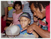
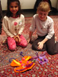
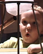

PIE Home
Events
Ideas
Crickets
Places
Links
Philosophy
|
 |
Events and WorkhopsMuseums across the PIE Network offer workshops and MindFest events, bringing together playful inventors of all ages. Here are some of the recent and upcoming PIE activities: |
Invention
at Play
Visit the Lemelson Center's Invention
at Play exhibition.
Arizona
Science Center (Phoenix, Arizona)
June 1 - August 31, 2003
COSI Columbus
(Columbus, Ohio)
October 1 - Dec. 31, 2003

MindFest
at MIT Museum
Sunday, June 22, 2003 MIT Museum offers its first MindFest
event. The festival features exhibit-based activities, roundtable discussions
and playshops, led by some of the most inventive minds in the country.
The week of July 22nd, 2002, visitors to the American Visionary Art Museum helped decorate a car with flowers that squirted water and other attention-catching contraptions. Take a look!

Fort
Worth MindFest III
Stay tuned! Fort Worth's third annual MindFest takes place on August 23,
2003. See what happened at last year's MindFest event--view a photo
album, a staff
scrapbook, and the event website.